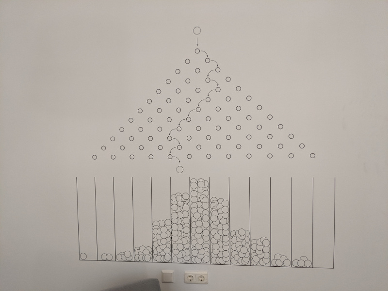
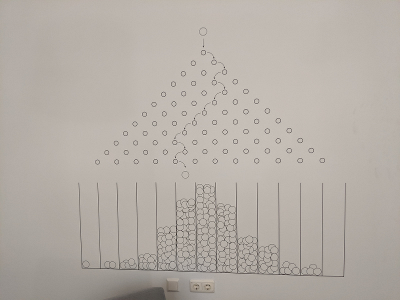

First 2 images courtesy of Wikipedia; last image mine (TU Delft, the Netherlands, Oct '18)
Math 316 - Probability (Fall 2019)
TR 13:20-14:35, McGregory 226
Instructor: Joe P. Chen
Contact: McGregory 214, jpchen@(the obvious suffix).
Prerequisites: This course does NOT require prior knowledge of probability & statistics. However, it does require solid mastery of the entire calculus sequence (MATH 161-162-163), up to and including differentiation rules (e.g. the chain rule), Taylor series, limits, partial differentiation, and multiple integration.
These topics will hardly be reviewed in the course, so please come with ample preparation!
Course synopsis: This is a calculus-based probability course. There will be a mix of theory and applications.
We start with the axioms of probability, and illustrate them with coin tosses, die throwing, and card shuffling. Independence and conditioning also come into play.
However, very soon we graduate to serious discussions of random variables (which is neither random nor a variable---it's a function!).
We will cover the major discrete and continuous probability distributions: the stories and properties behind each distribution, and how different distributions are connected via transformations and/or limits.
Then we will cover multivariate distributions, conditional distributions, sums of independent random variables, covariances, and moment generating functions.
If all goes according to plan, we will end on the law of large numbers and the central limit theorem, the two gems of probability theory.
Textbook: We will use the FREE open source textbook here, which contains just a little more than what we will cover.
Optional references (to be placed on course reserve at the Cooley Science Library): Ross, A First Course in Probability; Anderson, Seppäläinen, and Valkó, Introduction to Probability; Grinstead and Snell, Introduction to Probability.
A gallery of past probability exam and homework problems (no solutions)
Back to the Colgate math department

{kind=link}